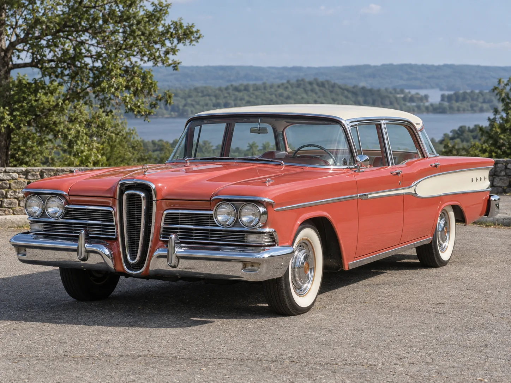
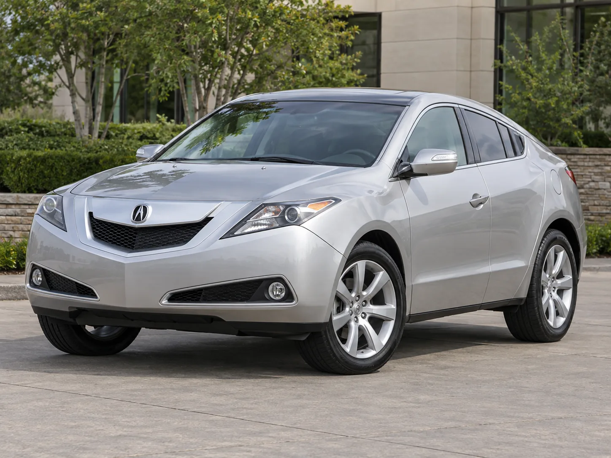
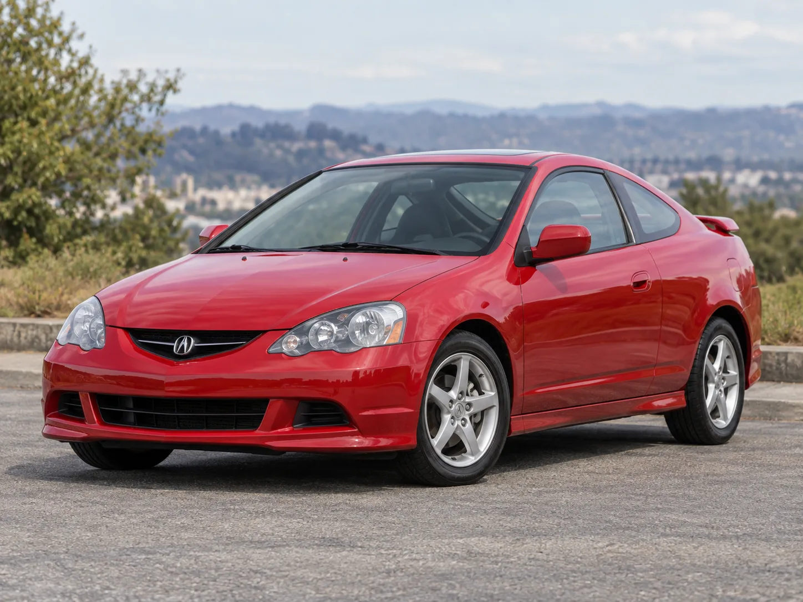
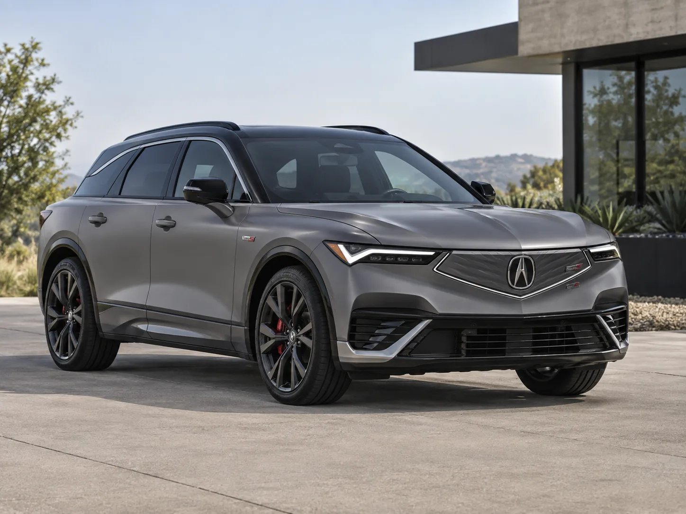

▲ 자동차 역사상 가장 대표적인 '실패한 이름'으로 꼽히는 포드 에드셀. 출시 2년여 만에 브랜드 자체가 단종됐다(AI 생성 이미지) ⓒ CarPrism
1. 카스쿱스가 꼽은 '저주받은 이름' — 에드셀과 ZDX
미국 자동차 매체 카스쿱스(Carscoops)가 최근 칼럼에서 던진 질문은 단순했다. "당신이 생각하는 가장 저주받은 자동차 이름은 무엇인가?" 칼럼이 첫손에 꼽은 사례는 두 가지, 포드 에드셀(Edsel)과 아큐라 ZDX다. 에드셀은 1957년 출시 첫해 6만3,110대가 팔리며 나쁘지 않은 출발을 보였지만, 이듬해 판매량이 30%나 급락했고 1959년 브랜드 자체가 단종됐다. 카스쿱스는 "많은 사람들이 에드셀을 의문스러운 스타일의 포드 재탕으로 봤다"고 평했다.
더 극적인 사례는 아큐라 ZDX다. 2009년 각진 크로스오버 쿠페로 처음 등장한 1세대 ZDX는 2013년 단종될 때까지 7,191대 판매에 그쳤다. 그런데 혼다는 10여 년 뒤 이 이름을 다시 꺼내 들었다. GM의 플랫폼을 빌려 만든 아큐라 최초의 순수전기 크로스오버에 또다시 'ZDX'라는 이름을 붙인 것이다. 2024년형 ZDX는 6만4,500~7만3,500달러(약 9,000만~1억 원)의 가격대에 완충 주행거리 278마일(약 447km)을 내세우며 출시됐지만, 2024년 7,391대 판매 이후 2025년 가을 단종됐다. 카스쿱스는 "대규모 할인 공세에도 불구하고 구조되지 못했다"고 지적했다.

▲ 2009년 데뷔한 1세대 아큐라 ZDX. 독특한 각진 쿠페 디자인에도 4년간 7,191대 판매에 그치며 조용히 단종됐다(AI 생성 이미지) ⓒ CarPrism
공교롭게도 아큐라는 한때 'RSX'라는 이름의 부활도 검토했던 것으로 알려졌다. RSX는 2002~2006년 인테그라의 후속으로 호평받았던 쿠페였는데, 전기 크로스오버용 이름으로 재활용하는 방안이 논의되다 결국 무산됐다. 카스쿱스는 이 일화를 두고 "ZDX의 저주는 거기서 끝나지 않았다"며, 실패한 이름을 다시 쓰려는 유혹이 업계 전반에 반복되고 있음을 꼬집었다. 카스쿱스 원문은 아래에서 확인할 수 있다. 바로가기

▲ 인테그라의 후속으로 호평받았던 아큐라 RSX(2002~2006). 전기 크로스오버용으로 이 이름을 재활용하는 방안이 검토됐으나 결국 무산됐다(AI 생성 이미지) ⓒ CarPrism
2. 왜 하필 '저주'라는 표현까지 나왔나
자동차 업계에서 특정 이름에 '저주'라는 표현이 붙는 이유는 단순한 미신이 아니라 소비자 인식의 축적 때문이다. 신차의 이름은 광고, 중고차 시세표, 리콜 뉴스, 커뮤니티 후기 등을 통해 오랜 기간 대중의 기억 속에 저장된다. 한 번 실패나 혹평이 각인된 이름은 이후 완전히 다른 차량에 붙여지더라도 소비자의 무의식적 거부감을 지우기 어렵다는 것이 마케팅 업계의 공통된 분석이다.
📍 에드셀이 남긴 교훈
에드셀은 출시 전 대대적인 마케팅과 별개로 실제 완성차 품질 결함, 높은 가격, 경기 침체 시점이 맞물리며 실패했다. 그런데도 '에드셀'이라는 이름 자체가 실패의 대명사로 굳어져, 이후 수십 년간 '제2의 에드셀이 될 것'이라는 표현이 신차 혹평의 관용구로 쓰였다. 이름 하나가 브랜드의 운명과 별개로 대중문화 속에서 독자적인 '오명'을 얻은 사례다.
ZDX 역시 비슷한 경로를 밟았다. 1세대의 부진한 판매 실적과 애매한 포지셔닝(크로스오버도 쿠페도 아닌 애매한 차체)이 자동차 마니아층 사이에서 오랫동안 회자됐고, 이후 전동화 시대에 같은 이름이 다시 등장하자 곧바로 "과거의 실패를 되풀이하는 것 아니냐"는 우려 섞인 반응이 나왔다. 실제로 2세대 ZDX 역시 한 모델연도 만에 단종되며 그 우려가 현실이 됐다.
3. 브랜드 전략 관점에서 본 '이름 재활용'의 함정
자동차 브랜드가 단종된 이름을 다시 꺼내 드는 이유는 명확하다. 새 이름을 개발하고 상표 등록하는 데 드는 비용과 시간을 아끼고, 오래된 팬층의 향수(노스탤지어)를 활용할 수 있기 때문이다. 그러나 이 전략은 두 가지 전제가 충족될 때만 통한다. 첫째, 원래 이름이 실패가 아니라 단순히 세대교체로 사라졌어야 하고 둘째, 부활한 신제품이 이전 세대보다 명백히 뛰어나야 한다는 것이다.

▲ 2024년 GM 플랫폼 기반으로 재출시된 2세대 ZDX. 아큐라 최초의 순수전기 모델이었지만 한 모델연도 만에 단종됐다(AI 생성 이미지) ⓒ CarPrism
ZDX의 사례는 두 조건 모두 충족하지 못했다는 평가를 받는다. 1세대가 판매 부진으로 단종된 '실패한 이름'이었던 데다, 2세대는 자체 개발이 아닌 GM 플랫폼을 가져다 쓴 파생 모델이라는 인식이 강해 '아큐라다움'을 살리지 못했다는 지적이 뒤따랐다. 업계 관계자들은 이런 사례를 두고 "실패한 이름은 향수를 자극하기 전에 먼저 의구심을 자극한다"고 표현한다. 결국 이름 재활용은 마케팅 비용을 아끼려다 오히려 초기 소비자 신뢰를 깎아 먹는 양날의 검이 될 수 있다.
4. 반대로, 이름 재활용에 성공한 사례들
모든 이름 재활용이 저주로 끝나는 것은 아니다. 도요타는 1998년 단종했던 스포츠카 '수프라'를 2019년 BMW와 공동 개발한 5세대 모델로 부활시켰고, 이번엔 초기 우려와 달리 상업적·비평적으로 모두 성공을 거뒀다. 포드 역시 2020년대 초 '브롱코(Bronco)'를 오프로드 SUV로 부활시켜 지프 랭글러의 강력한 경쟁자로 자리 잡았다. 두 사례의 공통점은 원래 이름이 '실패'가 아니라 '단종 후 그리움의 대상'으로 남아 있었고, 부활 모델이 그 그리움에 값하는 완성도를 보여줬다는 점이다.
| 구분 | 이름 | 결과 | 핵심 요인 |
|---|---|---|---|
| 실패 | 아큐라 ZDX(2024) | 1년 만에 단종 | 1세대부터 이어진 실패 이미지, GM 플랫폼 의존 |
| 실패 | 포드 에드셀 | 브랜드 자체 소멸(2년) | 품질 논란·고가 정책·경기 침체 겹침 |
| 성공 | 도요타 수프라(2019) | 스포츠카 라인업 재건 | 21년 공백 후 완성도 높은 재해석 |
| 성공 | 포드 브롱코(2021) | 오프로드 SUV 강자로 복귀 | 오리지널 정체성 계승 + 신규 세그먼트 개척 |
5. 국산차는 어떨까 — 쌍용 무쏘와 현대 다이너스티의 갈림길
국내 완성차 업계에서도 이름을 둘러싼 전략적 선택은 엇갈려 왔다. KG모빌리티(옛 쌍용자동차)의 '무쏘'가 대표적인 재활용 사례다. 1993년 처음 등장한 무쏘는 2005년 판매 부진으로 단종됐지만, 2018년 쌍용은 '무쏘 그랜드'라는 이름으로 픽업트럭 시장에 이 이름을 다시 불러냈다. 이후 전동화 버전인 '무쏘 EV'까지 이어지며 KG모빌리티의 픽업 라인업을 지탱하는 이름으로 자리 잡았다. 원래 이름이 '실패해서 사라진 것'이 아니라 단종 이후에도 오프로드 SUV로서 향수가 남아있었다는 점에서 도요타 수프라·포드 브롱코의 재활용 성공 공식과 닮아 있다.

▲ 2005년 단종됐던 '무쏘'는 2018년 픽업트럭으로, 이후 전기차 '무쏘 EV'로까지 이어지며 국내에서 드문 이름 부활 성공 사례로 꼽힌다 ⓒ KG모빌리티
반면 현대차는 아예 다른 길을 택했다. 1999년 플래그십 세단 '다이너스티'가 단종된 뒤, 후속 모델에는 '다이너스티'라는 이름을 재활용하지 않고 '에쿠스'라는 완전히 새로운 이름을 붙였다. 이후 현대차그룹은 고급차 시장에서의 확실한 재출발을 위해 아예 별도 브랜드 '제네시스'를 분리 독립시키기까지 했다. 실패나 애매한 포지셔닝으로 이름의 이미지가 흐려지느니, 차라리 이름 자체를 버리고 새로 시작하는 편을 택한 것이다. 카스쿱스가 지적한 '저주받은 이름'의 함정을 원천적으로 피해간 전략인 셈이다. 무쏘의 성공적 부활과 다이너스티의 완전한 세대교체는, 이름을 다시 쓸지 버릴지에 대한 국산차 업계 나름의 답을 보여준다.
결국 카스쿱스의 질문 "가장 저주받은 자동차 이름은?"에 정답은 없다. 다만 확실한 건, 이름이 브랜드의 유산이 될지 족쇄가 될지는 그 이름을 다시 꺼내 든 순간의 완성도에 달려 있다는 점이다.